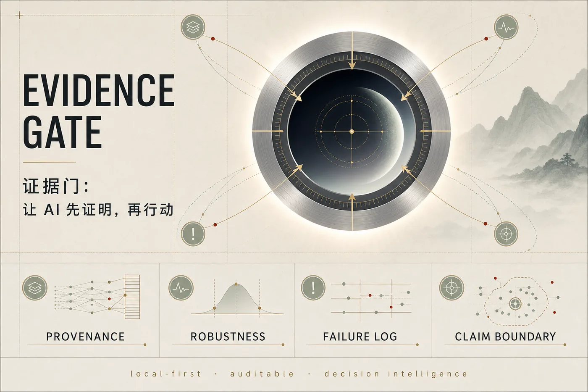

Cybernetic Teaching
Control-theoretic formula for teaching AI agents.
Public Archive
Public preprints may include author identity. Double-blind conference submissions use separate anonymous packages and must not link back to this page.

Confirmed Public Records
These records have public DOI entries in the project master table. P10-P18 and P21 are listed below as local preprint packages until their DOI records are confirmed.
Prepared Local Packages
These entries are present in the local release folder. They should be linked here after each Zenodo record is published and verified.
Control-theoretic formula for teaching AI agents.
Tact, timing, and role maturation as measurable agent calibration.
Organismic engineering for edge-deployable embodied wisdom.
Non-operational recursive safety for embodied multi-agent systems.
Civic, rescue, and safety-oriented multi-agent coordination.
Dataset-only compact evidence and causal-unknown benchmark package.
Evidence-gated immunity for human-AI information systems.
Residual-response modeling beyond static memory replay.
Human intervention residuals as physical gradients for embodied wisdom.
Boundary
Public DOI records establish priority and inspectability. They are not anonymous conference supplements.
For double-blind venues, use the separate conference packages and anonymous artifact links prepared in the local release tree.